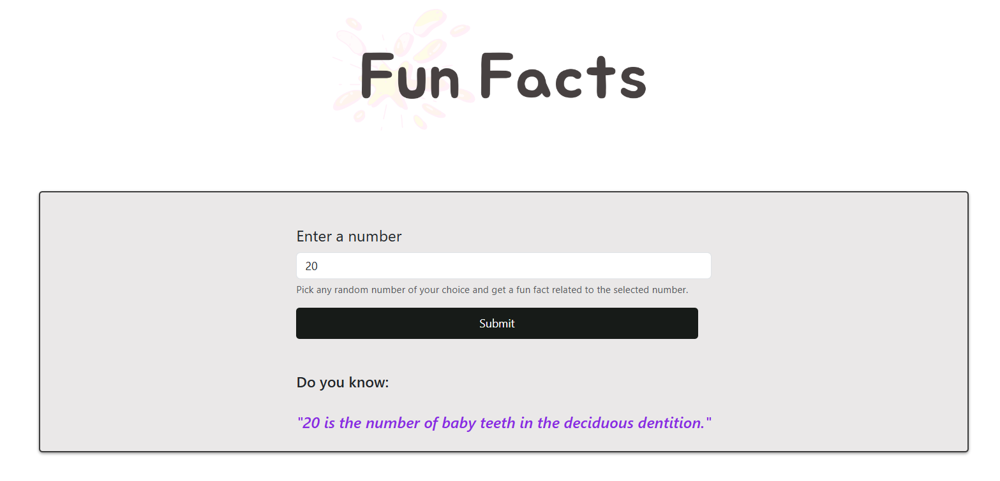

Python Projects

Highlights my proficiency in Python programming, where I've developed applications using the Flask web framework and RestAPI. These applications demonstrate my ability to create efficient, scalable, and maintainable web services.
Web Application with Python and NumbersAPI
This is a web application, developed using Python Flask and NumbersAPI which allows users to enter a number and receive a fun fact related to the number. A Dockerfile is also included, which allows for the creation of a Docker image, simplifying the process of installing and running it in various environments.
Project Link